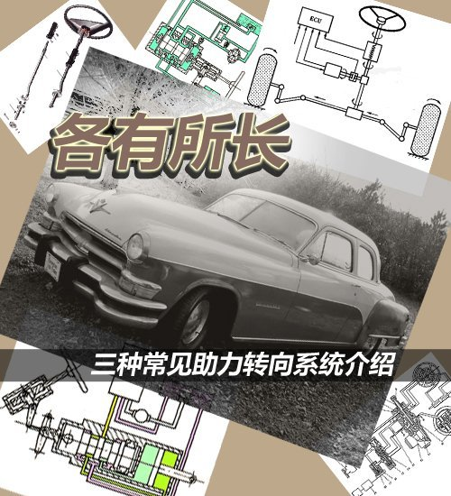

各有所长！三种常见助力转向系统介绍
大家在看参数配置表的时候会注意到其中有一个项目是“助力类型”，在这一栏我们常见的内容有机械液压助力、电子液压助力、电动助力三种，那么“助力类型”具体指的是什么？三种形式分别代表什么样的内容？各种方式有什么不同和优缺点？今天这篇文章就给大家做个简单的介绍。

● 历史回顾
早期汽车的转向是没有任何助力装置的，全靠驾驶员体力作为转向的动力源，实际上我们现在也偶尔能见到没有任何转向助力装置的车型，开过这种车的朋友都会对其沉重的方向盘印象深刻，为了减轻驾驶员负担，同时也有驾驶安全性等方面的考虑，人们发明了转向助力系统。
1951第六代Imperial 1948-1954
关于它的起源，现在有资料可查的最早记录是在1902年2月，由英国人Frederick W. Lanchester发明了“液压驱动转向”的系统，而最早的商品化应用则推迟到了半个世纪之后，1951年克莱斯勒把成熟的液压转向助力系统应用在了Imperial车系上，正式的配置名称是“Hydraguide”——油压转向装置，当时这是一项选装配置，要价226美元，在那个年代可以说相当的不便宜。
1965第二代Mercury Park Lanes 1964-1968
之后人们又发明了电子液压助力系统，具体的技术细节我们稍后讲解。1965年福特用旗下水星车型做试验性推广，把名为“wrist-twist instant”的转向助力系统装在了一批Park Lanes车型上，使得新车的转向比达到15:1，使用起来非常省力，这被认为是现代电子液压转向助力系统的雏形。
本田NSX
至于电动助力转向系统的历史则要短的多，这项技术起源于日本的汽车厂商，1990年本田发布了世界上第一款搭载可变齿比电动转向助力系统车型：NSX。相比1988年的铃木Cervo，NSX的系统更接近于当今意义上的电动转向助力。
● 技术介绍
1.机械转向系统
关于历史我们就了解到这，现在来看看技术方面的内容。虽然助力系统是今天的主角，但首先我们得了解一下没有任何助力的机械转向系统是什么样的结构，也就是所有转向系统的基础所在。
转向系统的可以大致分为三个部分：转向操纵机构，转向器，转向传动机构。转向操纵机构很好理解，就是我们驾驶车辆时直接接触的部分，它把驾驶员的体力传递到传向系统当中。
转向器的内容则有些复杂，它是整个转向系统中的核心部件，而各种助力方式也是在这个部分实现的。转向器的作用是放大驾驶员传递的力同时改变力的传递方向，常见的形式有齿轮齿条式、循环球式、蜗杆曲柄指销式等等。
转向传动机构是从转向器到转向轮之间所有传动机械、杆件的总称，它的作用是把转向器输出的力传递到转向节上，从而实现转向轮的转向，同时让转向轮之间的转角遵循一定的规律，保证轮胎和地面之间的相对滑动控制在最低程度。
总体而言，从原理上来说机械转向系统的结构是很好理解的，就是用纯人力驱动各种机械结构的组合，通过将人力放大、变向等步骤来操纵轮胎的转动，这种系统的特点也是一目了然：结构简单，可靠性强，但使用相当费力，稳定性、精确性、安全性无法保证。
2.机械液压助力转向系统
于是助力系统的出现变得非常有必要，我们先来看第一种：机械液压助力。这种助力形式是我们最常见的一种，前面提到它诞生于1902年，也就是说已经有了百年历史。由于技术成熟可靠，而且成本低廉，得以被广泛普及。

机械液压助力系统的主要组成部分有液压泵、油管、压力流体控制阀、V型传动皮带、储油罐等等。这种助力方式是将一部分发动机动力输出转化成液压泵压力，对转向系统施加辅助作用力，从而使轮胎转向。
根据系统内液流方式的不同可以分为常压式液压助力和常流式液压助力。常压式液压助力系统的特点是无论方向盘处于正中位置还是转向位置、方向盘保持静止还是在转动，系统管路中的油液总是保持高压状态；而常流式液压转向助力系统的转向油泵虽然始终工作，但液压助力系统不工作时，油泵处于空转状态，管路的负荷要比常压式小，现在大多数液压转向助力系统都采用常流式。可以看到，不管哪种方式，转向油泵都是必备部件，它可以将输入的发动机机械能转化为油液的压力。
由于依靠发动机动力来驱动油泵，能耗比较高，所以车辆的行驶动力无形中就被消耗了一部分；液压系统的管路结构非常复杂，各种控制油液的阀门数量繁多，后期的保养维护需要成本；整套油路经常保持高压状态，使用寿命也会受到影响，这些都是机械液压助力转向系统的缺点所在。
能被广泛使用自然也是不缺优势的，这里列举一二：方向盘与转向轮之间全部是机械部件连接，操控精准，路感直接，信息反馈丰富；液压泵由发动机驱动，转向动力充沛，大小车辆都适用；技术成熟，可靠性高，平均制造成本低。
2三种助力技术介绍
3.电子液压助力转向系统
机械液压助力大幅消耗发动机动力，所以人们在此基础上进行改进，开发出了更节省能耗的电子液压助力转向系统。
福特福克斯采用电子液压助力转向系统
这套系统的转向油泵不再由发动机直接驱动，而是由电动机来驱动，并且在之前的基础上加装了电控系统，使得转向辅助力的大小不光与转向角度有关，还与车速相关。机械结构上增加了液压反应装置和液流分配阀，新增的电控系统包括车速传感器、电磁阀、转向ECU等。
电子液压助力的原理与机械液压助力基本相同，不同的是油泵由电动机驱动，同时助力力度可变。车速传感器监控车速，电控单元获取数据后通过控制转向控制阀的开启程度改变油液压力，从而实现转向助力力度的大小调节。
电子液压助力拥有机械液压助力的大部分优点，同时还降低了能耗，反应也更加灵敏，转向助力大小也能根据转角、车速等参数自行调节，更加人性化。不过引入了很多电子单元，其制造、维修成本也会相应增加，使用稳定性也不如机械液压式的牢靠，随着技术的不断成熟，这些缺点正在被逐渐克服，电子液压助力已经成为很多家用车型的选择。
4.电动助力转向系统
不管是机械液压还是电子液压，终究是采用油液加压的方式来实现助力，不够直接而且消耗行驶动力，油泵憋坏了也比较烦人，由此应运而生了电动助力转向系统。
本田飞度采用电动助力转向系统
在这套系统里不再有油液、管路，取而代之的是直接干脆的电子线路和设备，主要组件有电控单元、车速传感器、转矩传感器、电动机等等，原理也不复杂：传感器把采集到的车速、转角信息输送给ECU，ECU决定电动机的旋转方向和助力电流大小，把指令传递给电动机，电动机将辅助动力施加到转向系统中，这样实时调整的转向助力便得以实现。
从结构、原理上看，电动助力转向系统的优点是显而易见的：系统结构精简，质量小，占用空间少；只消耗电力，能耗低；电子系统反应灵敏，动作直接、迅速。
不过电动机直接驱动转向机构，只能提供有限的辅助力度，难以在大型车辆上使用；同时电子部件较多，系统稳定性、可靠性都不如机械式部件；路感信息匮乏，实际驾驶中的操控乐趣大大减少；以及成本较高等等，这些都是电动助力转向系统的劣势所在。
● 总结：
今天介绍的三种助力方式是我们日常能见到的最主流的三种，它们有着各自的优点和缺点，从长远来看，电子助力似乎成为发展趋势所在，轻便、节能、响应迅速，不过在驾驶层面的劣势短期内还不能得到很好的弥补，所以机械液压助力和电子液压助力也还拥有自己的市场，不出意外的话未来一段时间内都将是百家争鸣的局面。